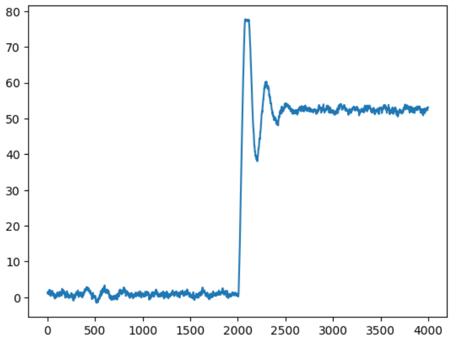
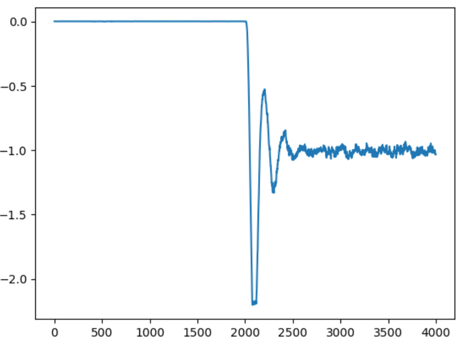
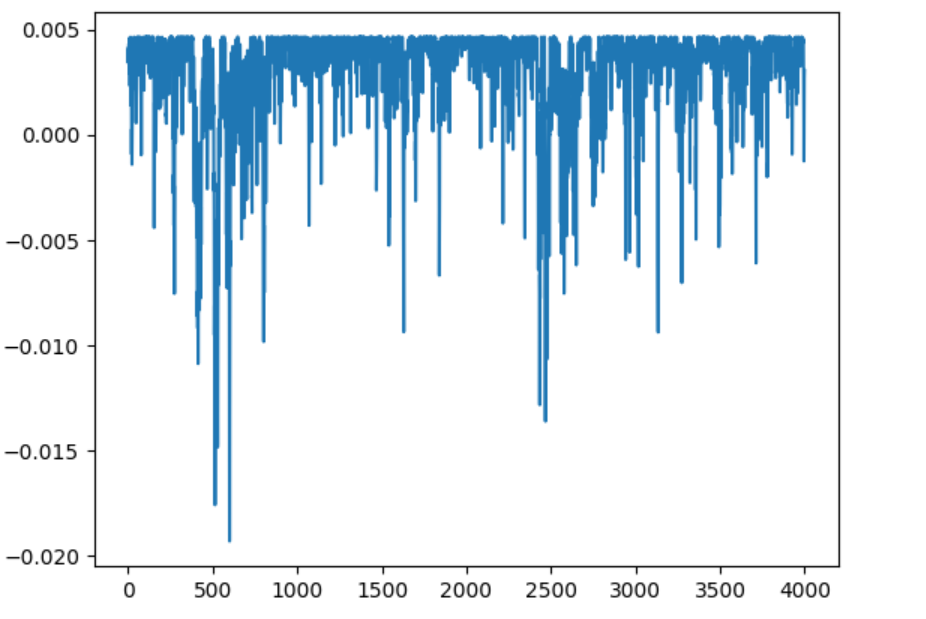
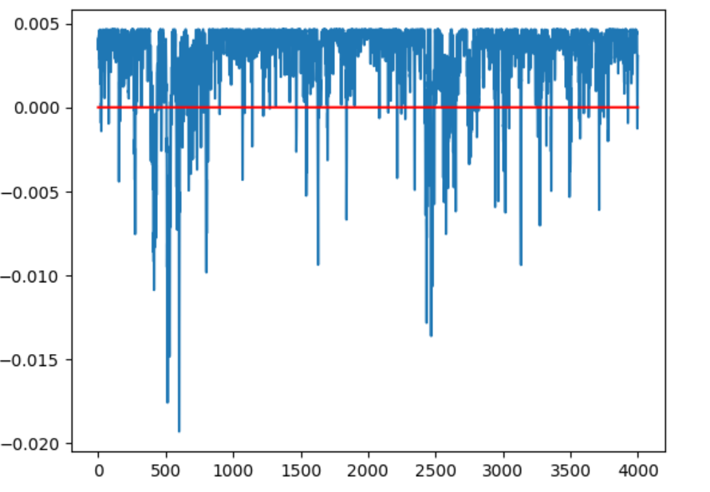
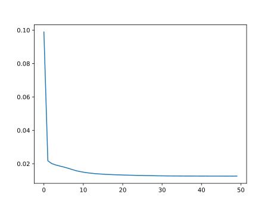
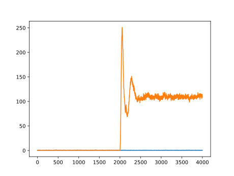
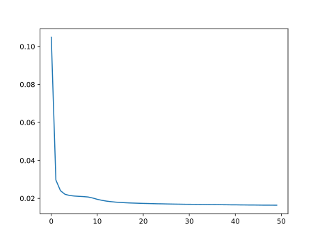
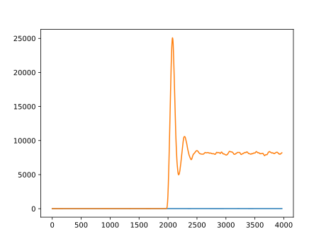

OCSVM&&BP&&RNN
One-Class-SVM
原理分析
代码展示- 线性核函数
必要库导入
import csv # 用于读取 csv 文件 #
import numpy as np
import matplotlib.pyplot as plt
import matplotlib.font_manager
from sklearn import svm
函数定义
读取函数
def read_row(filename, rowno):
data = []
with open(filename) as csvfile:
csv_reader = csv.reader(csvfile)
for row in csv_reader:
data.append(row[rowno])
for i in range(len(data)):
data[i] = float(data[i])
return data
试验过程
# 使用`svm.OneClassSVM(nu=0.1, kernel='linear').fit(myTrain)`,线性核函数来训练
trainSerialNum =[]
myTrain = read_row(r'/content/drive/MyDrive/Colab Notebooks/assets/Train_data.csv', 0)
myTest = read_row(r'/content/drive/MyDrive/Colab Notebooks/assets/Test_data1.csv', 0)
for i in range(4000):
trainSerialNum.append(i)
for i in range(len(myTrain)):
myTrain[i]=[myTrain[i]]
for i in range(len(myTest)):
myTest[i]=[myTest[i]]
clf = svm.OneClassSVM(nu=0.1, kernel='linear').fit(myTrain)
myTrain=np.array(myTrain)
myTest=np.array(myTest)
y_pred_train = clf.predict(myTrain)
y_pred_test = clf.predict(myTest)
print("train",y_pred_train[1900:2100])
print("test",y_pred_test[1900:2100])
Z = clf.decision_function(myTest.reshape(-1, 1))
plt.plot(trainSerialNum,Z)
plt.show()
print(Z)
输出
数据到超平面的距离-线性核函数
所以我们引入高斯核函数来升维
svm.OneClassSVM(nu=0.1, kernel='rbf',gamma=0.1).fit
import csv # 用于读取 csv 文件 #
import numpy as np
import matplotlib.pyplot as plt
import matplotlib.font_manager
from sklearn import svm
def read_row(filename, rowno):
data = []
with open(filename) as csvfile:
csv_reader = csv.reader(csvfile)
for row in csv_reader:
data.append(row[rowno])
for i in range(len(data)):
data[i] = float(data[i])
return data
trainSerialNum =[]
myTrain = read_row(r'/content/drive/MyDrive/Colab Notebooks/assets/Train_data.csv', 0)
myTest = read_row(r'/content/drive/MyDrive/Colab Notebooks/assets/Test_data1.csv', 0)
for i in range(4000):
trainSerialNum.append(i)
for i in range(len(myTrain)):
myTrain[i]=[myTrain[i]]
for i in range(len(myTest)):
myTest[i]=[myTest[i]]
clf = svm.OneClassSVM(nu=0.1, kernel='rbf',gamma=0.1).fit(myTrain)
myTrain=np.array(myTrain)
myTest=np.array(myTest)
y_pred_train = clf.predict(myTrain)
y_pred_test = clf.predict(myTest)
print("train",y_pred_train[1900:2100])
print("test",y_pred_test[1900:2100])
Z = clf.decision_function(myTest.reshape(-1, 1))
plt.plot(trainSerialNum,Z)
plt.show()
print(Z)
n_error_train = y_pred_train[y_pred_train == -1].size
n_error_test = y_pred_test[y_pred_test == -1].size
print("训练集错误个数",n_error_train)
print("测试集错误个数",n_error_test)
输出
数据到超平面的距离-高斯核函数
nu=0.1

nu=0.01


border_line_list=[]
for i in range(myTrain.shape[0]):
if(0<\Z[i]<=0.0001):
border_line_list.append(i)
print(border_line_list)
print(myTrain[border_line_list[1]])
print(myTrain[border_line_list[0]])
zeros4000=np.zeros(4000)
zerosline = np.linspace(start = 0.23, stop =0.29, num =4000)
zeroheight = np.linspace(-0.05,0.05,4000)
borX1=myTrain[border_line_list[0]]
borX2 = myTrain[border_line_list[1]]
plotX1y=np.ones(4000)*borX1
plotX2y=np.ones(4000)*borX2
# print(zerosline)
plt.plot(zerosline,zeros4000)
plt.plot(myTrain,zeros4000,'*y')
plt.plot(plotX1y,zeroheight,'r')
plt.plot(plotX2y,zeroheight,'r')
plt.plot(myTest[:2000],zeros4000[:2000],'*b')
plt.plot(myTest[2000:],zeros4000[2000:],'*g')
# plt.plot()
plt.show
我们再把nu调小到0.01
分界线变得更宽
[0.28405475]
[0.24934578]
可以看到范围更加宽容效果更好，同时误报率更低了

可以看到正常数据和异常数据被很明显的区分开了
BP神经网络
import os
os.environ['KMP_DUPLICATE_LIB_OK']='True'
import csv # 用于读取 csv 文件 #
import matplotlib.pyplot as plt # 用于绘图 #
import numpy as np
import tensorflow
def read_all(filename):
data = []
with open(filename) as csvfile:
csv_reader = csv.reader(csvfile)
for row in csv_reader:
data.append(row)
for i in range(len(data)):
for j in range(len(data[0])):
data[i][j] = float(data[i][j])
return data
train_data = np.array(read_all(r'.\Train_data.csv'))
test_data1 = np.array(read_all(r'.\Test_data1.csv'))
# test_data2 = np.array(read_all(r'.\Test_data2.csv'))
normal_train_data = train_data - np.min(train_data,axis=0)
normal_train_data = normal_train_data / (np.max(train_data,axis=0)-np.min(train_data,axis=0))
normal_test_data = test_data1 - np.min(train_data,axis=0)
normal_test_data = normal_test_data / (np.max(train_data,axis=0)-np.min(train_data,axis=0))
print(normal_test_data.shape)
#输出
#(4000, 31)
model.summary()
model.compile(optimizer = 'adam', loss = 'mean_squared_error')
history = model.fit(normal_train_data, normal_train_data, epochs = 50, batch_size = 40)
Y_train = np.array(model.predict(normal_train_data))
Y_test = np.array(model.predict(normal_test_data))
train_loss = np.sum((Y_train-normal_train_data)**2,axis=1)
test_loss = np.sum((Y_test-normal_test_data)**2,axis=1)
plt.figure()
plt.plot(train_loss)
plt.plot(test_loss)
plt.figure()
plt.plot(history.history['loss'])
plt.show()
输出结果
损失函数曲线

输出结果

RNN & LSTM
引入读取归一化
import os
os.environ['KMP_DUPLICATE_LIB_OK']='True'
import csv # 用于读取 csv 文件 #
import matplotlib.pyplot as plt # 用于绘图 #
import numpy as np
import tensorflow
def read_all(filename):
data = []
with open(filename) as csvfile:
csv_reader = csv.reader(csvfile)
for row in csv_reader:
data.append(row)
for i in range(len(data)):
for j in range(len(data[0])):
data[i][j] = float(data[i][j])
return data
train_data = np.array(read_all(r'.\Train_data.csv'))
test_data1 = np.array(read_all(r'.\Test_data1.csv'))
# test_data2 = np.array(read_all(r'.\Test_data2.csv'))
normal_train_data = train_data - np.min(train_data,axis=0)
normal_train_data = normal_train_data / (np.max(train_data,axis=0)-np.min(train_data,axis=0))
normal_test_data = test_data1 - np.min(train_data,axis=0)
normal_test_data = normal_test_data / (np.max(train_data,axis=0)-np.min(train_data,axis=0))
print(normal_test_data.shape)
X_train = []
for i in range(32, normal_train_data.shape[0]+1):
X_train.append(normal_train_data[i-32:i])
X_train = np.array(X_train)
# X_train = np.reshape(X_train, (X_train.shape[0], X_train.shape[1], 1))
print(X_train.shape)
X_test = []
for i in range(32, normal_test_data.shape[0]+1):
X_test.append(normal_test_data[i-32:i])
X_test = np.array(X_test)
# X_train = np.reshape(X_train, (X_train.shape[0], X_train.shape[1], 1))
print(X_train.shape)
layer_0 = tensorflow.keras.layers.Input((32,31))
layer_1 = tensorflow.keras.layers.LSTM(24, return_sequences=True)(layer_0)
layer_2 = tensorflow.keras.layers.LSTM(16, return_sequences=True)(layer_1)
layer_3 = tensorflow.keras.layers.Dense(8)(layer_2)
layer_4 = tensorflow.keras.layers.Dense(4)(layer_3)
layer_5 = tensorflow.keras.layers.Dense(8)(layer_4)
layer_6 = tensorflow.keras.layers.Dense(16)(layer_5)
layer_7 = tensorflow.keras.layers.LSTM(24, return_sequences=True)(layer_6)
layer_8 = tensorflow.keras.layers.LSTM(31, return_sequences=True)(layer_7)
model = tensorflow.keras.models.Model(layer_0, layer_8)
model.summary()
model.compile(optimizer = 'adam', loss = 'mean_squared_error')
history = model.fit(X_train, X_train, epochs = 50, batch_size = 63)
Y_train = np.array(model.predict(X_train))
Y_test = np.array(model.predict(X_test))
train_loss = np.sum(np.sum((Y_train-X_train)**2,axis=2),axis=1)
test_loss = np.sum(np.sum((Y_test-X_test)**2,axis=2),axis=1)
H = [1]*32
I = [1]*(4000-31)
train_loss = np.convolve(train_loss,H)
test_loss = np.convolve(test_loss,H)
Mul = np.convolve(I,H)
train_loss = train_loss / Mul
test_loss = test_loss / Mul
plt.figure()
plt.plot(train_loss)
plt.plot(test_loss)
plt.figure()
plt.plot(history.history['loss'])
plt.show()
def test(data, max, min, ans):
tn = fn = tp = fp = 0
for i in range(len(data)):
if min < data[i] < max:
if ans[i]:
tn += 1
else:
fn += 1
else:
if ans[i]:
fp += 1
else:
tp += 1
return [tn, fn, tp, fp]
ANS = [True]*2000+[False]*2000
print(test(test_loss, max(train_loss), 0, ANS))
损失函数曲线

输出结果
